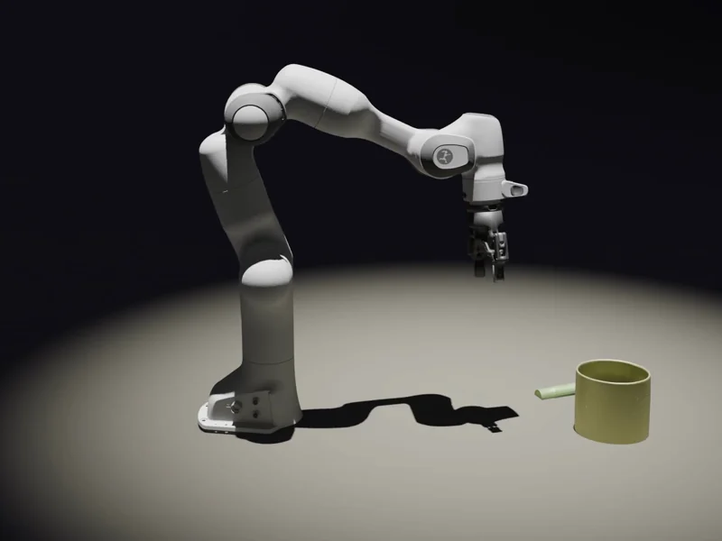

Robotics and world models
We connect robot interaction, actuation modeling, and physical world construction to simulation and robot learning.
University of British Columbia
Robotics, simulation
and physical AI.
We study how robots can model and interact with the physical world, led by Peter Yichen Chen at UBC Computer Science.

We develop simulation and learning methods for robotics: recovering physical properties from interaction, modeling actuation and contact, and constructing worlds in which robots can learn.
Our work spans robot manipulation, Real2Sim, and contact-aware world models, supported by research in neural simulation, geometry, and scientific computing.
Research areas
We connect robot interaction, actuation modeling, and physical world construction to simulation and robot learning.
We combine numerical methods and neural representations to simulate physical dynamics efficiently, across materials, geometries, and discretizations.
We develop geometric representations and optimization tools for physical constraints, computational design, and scientific computing.
Selected research

Learned actuator dynamics for robot simulation and sensorless force perception.

Recovering physics-based worlds from real interaction using vision-language agents.

Contact-centric deformable world modeling for robot learning.
Recent work
Preprint, arXiv:2609.33208 · 2026
arXiv preprint · 2026
SIGGRAPH Asia 2026 · Conference Track
News
Collaborative research on actuation modeling for robot dynamics and external-force perception.
Recognizing his contributions to computer animation and physics simulation.
UBC introduces Peter and his interdisciplinary research spanning art, engineering, and science.
People

Principal investigator
Assistant Professor, Computer Science
Postdoctoral researchers
Doctoral researchers
Incoming PhD students
Master’s students
Visiting students
We welcome enquiries from prospective graduate students, postdoctoral researchers, and collaborators. Application and contact information →